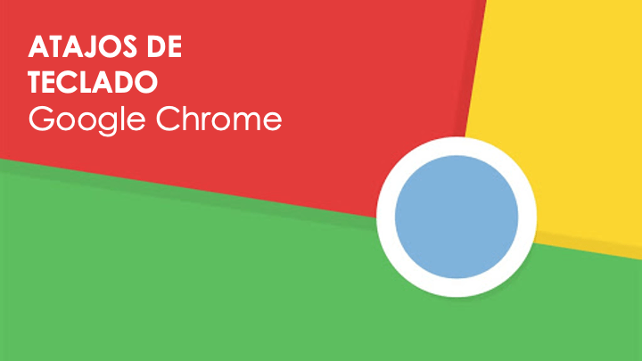

Atajos de teclado para pestañas y ventanas
A la hora de operar con nuestro navegador es importante tener el control de las pestañas y ventanas. Esto no sólo implica utilizar los clásicos atajos para abrir ventanas y pestañas normales o en modo incógnito, sino también el conseguir facilitar la navegación entre ellas sin necesidad de tener que tocar el ratón y perder tiempo mientras escribimos.
| Windows | Mac OS | Funcion |
|---|---|---|
| Ctrl + N | ⌘ + N | Abrir ventana nueva |
| Ctrl + Mayús + N | ⌘ + Mayús + N | Abrir ventana nueva en modo incógnito |
| Ctrl + T | ⌘ + T | Abrir pestaña nueva |
| Ctrl + Mayús + T | ⌘ + Mayús + T | Reabrir una pestaña recién cerrada |
| Ctrl + Tab Ctrl + AvPág |
⌘ + Opción + Der | Ir a pestaña siguiente |
| Ctrl + Mayús + Tab Ctrl + RePág |
⌘ + Opción + Izq | Ir a pestaña anterior |
| Ctrl + 1 a 8 | ⌘ + 1 a 8 | Ir a pestaña específica |
| Alt + Inicio | Alt + Inicio | Abrir página de inicio en pestaña activa |
| Ctrl + Mayús + W | Ctrl + Mayús + W | Cerrar todas las pestañas |
| Ctrl + Mayús + Q Alt + F4 |
⌘ + Q | Salir de Chrome |